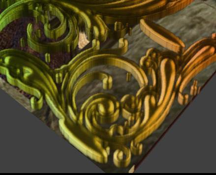
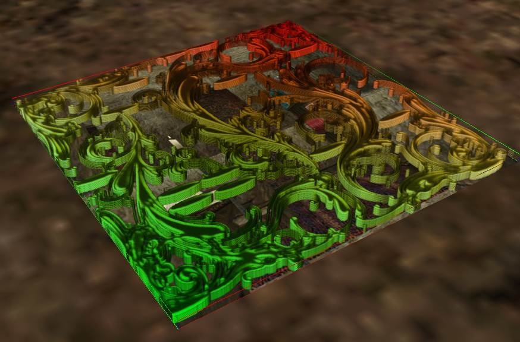
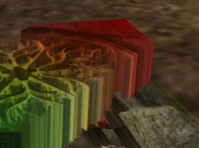
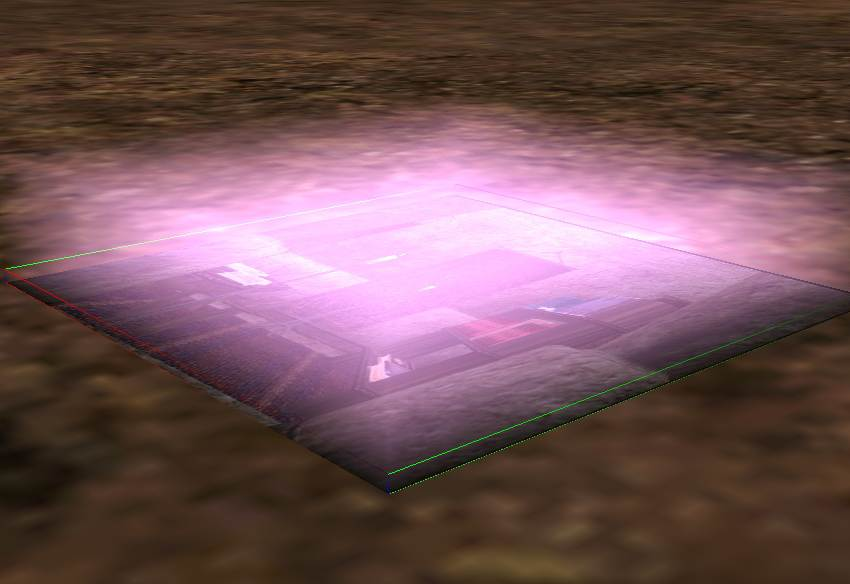

Создание эффекта глубокого рельефа
Довольно простой и относительно "дешевый" в реализации прием.
На самом деле, остается удивляться, что раньше 2023его года, никто так это и не использовал.
По крайней мере, на известных сайтах, таких скриншотов, на глаза, за все эти годы, не попадалось.
Впрочем, в последние пару лет (2023-24) такие объекты стали появляться. См. модель пак от брата Kurp-а на Nexuse, или плагины от Greatnes7.
Позволяет быстро создать:
- островки лавы на поверхности оной.
- гравированные буквы на каменных скрижалях.
- водяной массив плавно затеняемый в глубину.
и прочее на что потянет желание и Замысел.
И так, что тут нужно?
А продолжение этой статьи смотрим здесь!
Там описано дальнейшие развитие метода.
И еще смотрим, здесь, где примечания по созданию меха существа примечены.
Либо, читаем прям вот здесь:
*другой вопрос, что данный случай плохо применим к скиненым сеткам, т.е. с файлами существ, лучше работать (только) в 3д редакторе.
Где использовать модификатор Extrude, который позволит правильно увеличить габариты, не нарушая позиции сетки.
Т.к. в нифскопе будут проблемы с правильным позиционированием копии базовой сетки.
Т.е. просто масштабирование сетки не даст желаемого результата, приведя к смещению оной, а не "расширению".
|
|
- Открыть желаемый ниф файл.
- Найти поверхность которой желаемо придать большей глубины, или "объемности", на выбор. |
|
|
- Дублировать этот шейп и поднять на +0.Х относительно базовой поверхности.
|
|
|
- Поместить его в отдельную ноду.
|
|
|
- Перенести все свойства с шейпа на эту ноду.
Добавить альфа свойства (4845\200).
Высокие значения threshold могут полезны для лучшего соединения слоев.
В других случая, это сделает объект полностью прозрачным, что тоже полезно и нужно.
Т.е. значение тресхолда, следует подбирать согласно целям, но для начала установить его так; 200.
А далее смотреть исходя из целей.
И да, не забудьте добавить свойства тумана! Они крайне полезны при создании прозрачных объектов.
- Снова клонируем этот шейп и смещаем, но уже относительно исходного шейпа на 0.Х00.
Т.е. даем лишь минимальное смещение!
Повторяем пока не надоест, но не менее 10-то слоев!
Каждый слой получает +0.Х к значению предыдущего слоя.
Если надоело копировать каждый шейп отдельно, возьмите всю эту ноду, со всеми шейпами и копируйте ее целиком!
Вставьте, ее, в состав исходной ноды и сделайте смещение +Z уже этой, новой ноде!
А затем удалите с нее все свойства. Т.е. если они ей явно не нужны.
|
|
|
Когда "надоест плодить сущностей"(с), ака создавать слои - переходим к оптимизации.
Это оптимизирует размер файла и прочее.
Впрочем, лучше эту оптимизацию провести сразу.
Т.е. если копировать ноду с несколькими "оптимизированными" шейпами, то они сохранят эту, общую для них, шейпдату.
Тогда вместо нескольких десятков шейпдат, в файле будет всего 2-10 уникальных и можно не заморачиваться на прописывание каждому шейпу единой общей шейп даты.
Либо... либо сливаем все эти шейпы в единый мега шейп!
Ака жмем Combine Shapes (пока в них уникальные шейпдаты)!
Но это увеличит размер файла.
Поэтому, лучше использовать общую шейп дату.
В этом случае, кол-во слоев никак не повлияет на размер файла и минимально на производительность.
Важно!
Если же Вы уже назначили всем шейпа общую шейпдату и внезапно решили слить все шейпы в один единый...
Остановитесь, передумайте, откажитесь!
От этой затеи.
Возможно Нифскоп 1.1.3 не оценит ваш порыв и просто улетит в Краш попутно грохнув видеодрайвер...
По крайней мере, однажды, такое имело место быть.
Да и в целом, использование общей шейпдаты не подразумевает объединение объектов в один целый.
Повторно проверять подобное - не возникало желания ^-^
|
|
threshold 200 + альфа в цветах вертексов на шейпдате.
|
Все результаты будут видны сразу.
И чем больше слоев тем "глубже" будет изображаемый объем.
Z-буфер (здесь) НЕ! добавляем, иначе он смешает все слои в кашу.
Хотя, в другом случае его потребуется добавить, об этом см. ту заметку.
Но при создании букв, или "островков", или меха, он не нужен!
Собственно даже с текстурой без альфа канала, можно проделывать такой "номер".
Т.е. если поверхность имеет прозрачность в свойствах vertex color, то это будет влиять на прозрачность даже "непрозрачных" текстур (без альфа канала т.е.)
Высокие значение threshold "обгрызут" края текстуры.
Т.е. можно наделать "выпуклостей" из чего угодно, не прибегая к экструзиям полигонов и прочему 3д шаманству!
Однако, для более точного контроля, всегда следует использовать текстуры с альфа каналом!
Если текстура оказалась "съедена" слишком сильно - уменьшите значение threshold.
Такое бывает если текстура уже имеет резкий контур в альфа канале.
Т.е. следует учитывать мягкость контура в альфа канале текстуры, а равно формат!
DXT5 всегда будет иметь более мягкий контур а альфе, чем DXT3.
Возможно, FILTER_BILERP будет более предпочтительным, чем FILTER_TRILERP.
Т.е. в настройках текстурных свойств установить более "размытый" метод фильтрации текстуры.
|
|
threshold 122
Кусок текстуры "съеден".
|
    и threshold 2
|
|
|
Если "гребенка" очень заметна, уменьшите расстояние между слоями.
Не 0.Х000, а 0.0Х000.
А также проверьте альфа канал текстуры!
Примечание.
Стоит обратить внимание и на саму текстуру.
Контуры (букв или что там будет) желательно дополнительно обработать создав Stroke (в настройках слоя Фотошопа).
Цвет контура подобрать под основной цвет (букв, или что там будет).
Не забыть поправить альфа канал, так чтобы контуры также были прописаны.
Такой контур, позволит точнее смешать слои и избежать "полосок", т.е. "глубина" будет выглядеть ровнее и аккуратнее.
Т.е. столбик букв, будут иметь единый тон.
Примечание.
Также, освещение сцены, будет работать только по верхнему слою!
Т.е. не удается подсвечивать слои в глубину.
Это без z-буфера.
Примечание.
Для букв, не стоит делать слишком много слоев.
Но можно сделать меньшее смещение, что повысит ровность рельефа.
|
|
|
|
|
|
threshold 2
|
threshold 2
Stroke (в свойствах слоя текстуры) на 2pct
|
|
|
|
В темноте и без z-буфера, энверомент карта работает только по самому верхнему слою и никак не подсвечивает столбики букв.
|
При включенном в локации освещении (зелье света) рельефность букв хорошо видна. Но текстурный эффект на них не спешит проявляться.
|
|
|
Возможно добавление glow карты, или более светлого материала, может сделать буквы еще более рельефными.
Но к сожалению, не посредством действия текстурных эффектов!
|
Да, ванильная модель лавы начинает играть "новыми красками" если ей добавить пару другую лишних слоев с правильными настройками альфы и текстурой.
|